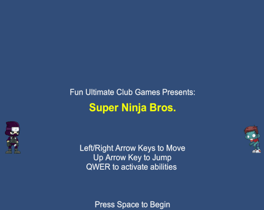
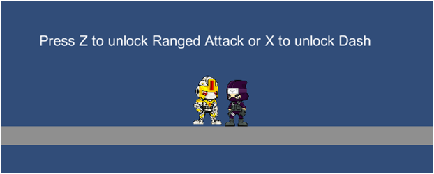
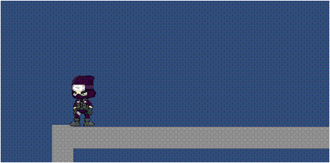

SUPER NINJA BROS
OVERVIEW

Over a ten week course, our team of three designed and created Super Ninja Bros using Unity and writing C# game scripts.
Player choice was a core mechanic so that those with different play styles could find unique methods to complete the game.
- Created a platforming side-scroller from the ground up using Unity and C# scripts
- Implemented features such as sprite animation, enemy AI, unique levels, and differentiated stealth and combat abilities
- Designed game mechanics with replayability in mind with branching level paths and choice of weapons and skills to suit different play styles
PROCEDURES

Originally, we intended to create a morality system where players would have to weigh the pros and cons of defeating enemies, and choosing to do
either would affect the type of skills and rewards available. Ultimately, we chose to implement different skills that the player could choose at
the end of the level. Combat skills assist with taking down enemies, while stealth skills are helpful for avoiding enemies and traversing the level.
One of my roles on the team involved designing and implementing the stealth skills. The stealth skills that you can obtain in the game are the dash,
which lets you dash forward quickly on ground or midair; the smoke bomb, which allows you to be undetected by enemies for a short while; and the choke
hold, which allows you to incapacitate enemies for a short time.

RESULTS
Our completed game has a total of five unique levels and seven unique skills to unlock. You can download and play our game here.